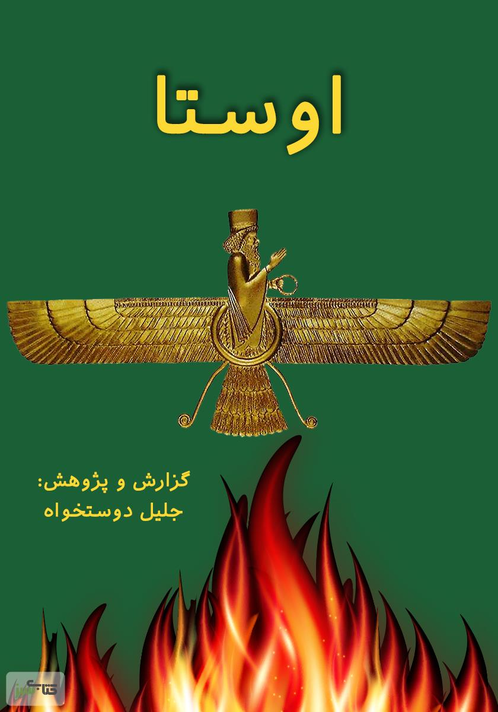

زرتشتیگری یکی از قدیمیترین ادیان جهان است که به آموزههای زرتشت، پیامبر ایرانی، نسبت داده میشود. این دین بر اصول نیکوکاری و عدالت تأکید دارد و به دنبال تحقق خوبی در زندگی انسانها است.
 نقد آیین زرتشتیزرتشتیان به وجود یک خدا به نام اهورا مزدا اعتقاد دارند و مبارزه بین خوبی و بدی را جزء جداییناپذیر زندگی میدانند. این اصول به عنوان پایههای اخلاقی و اجتماعی در جامعه ایرانی تأثیر گذاشته است و برای زرتشتیان اهمیت زیادی دارد.
زَرْتُشْتْ یا زَرْدُشْتْکتاب مقدس زرتشتیان، اوستا نام دارد که شامل آموزهها، دعاها و متون مقدس زرتشتی است. اوستا به دو بخش اصلی تقسیم میشود: یسنا که شامل مراسم دینی است و یشتها که دعاها و نیایشهای مختلف را در بر میگیرد.
کتاب مقدس زرتشتیانزرتشتیگری بر اساس اصولی چون نیکاندیشی، نیکگفتاری و نیککرداری بنا شده است. زرتشتیان معتقدند که هر فرد باید در زندگی خود این سه اصل را رعایت کند تا به سعادت و خوشبختی دست یابد.
زرتشتیان همچنین به مراسمهای مذهبی اهمیت زیادی میدهند. از جمله مهمترین این مراسمها، نوروز است که به عنوان جشن سال نو و آغاز بهار celebrated میشود. این جشن، نماد زندگی، نوآوری و شروع دوباره است.
زرتشتیگری تأثیر عمیقی بر فرهنگ و هنر ایرانی داشته است. بسیاری از افسانهها، اشعار و آثار هنری ایرانی از آموزههای زرتشتی الهام گرفتهاند و این دین نقش مهمی در شکلگیری هویت فرهنگی ایران ایفا کرده است.
امروزه زرتشتیان در نقاط مختلف جهان، به ویژه در ایران و هند، زندگی میکنند و با حفظ سنتها و آموزههای خود به جامعه خود ادامه میدهند. زرتشتیگری همچنان به عنوان یک دین باستانی و دارای ارزشهای انسانی و اخلاقی مورد توجه قرار دارد.